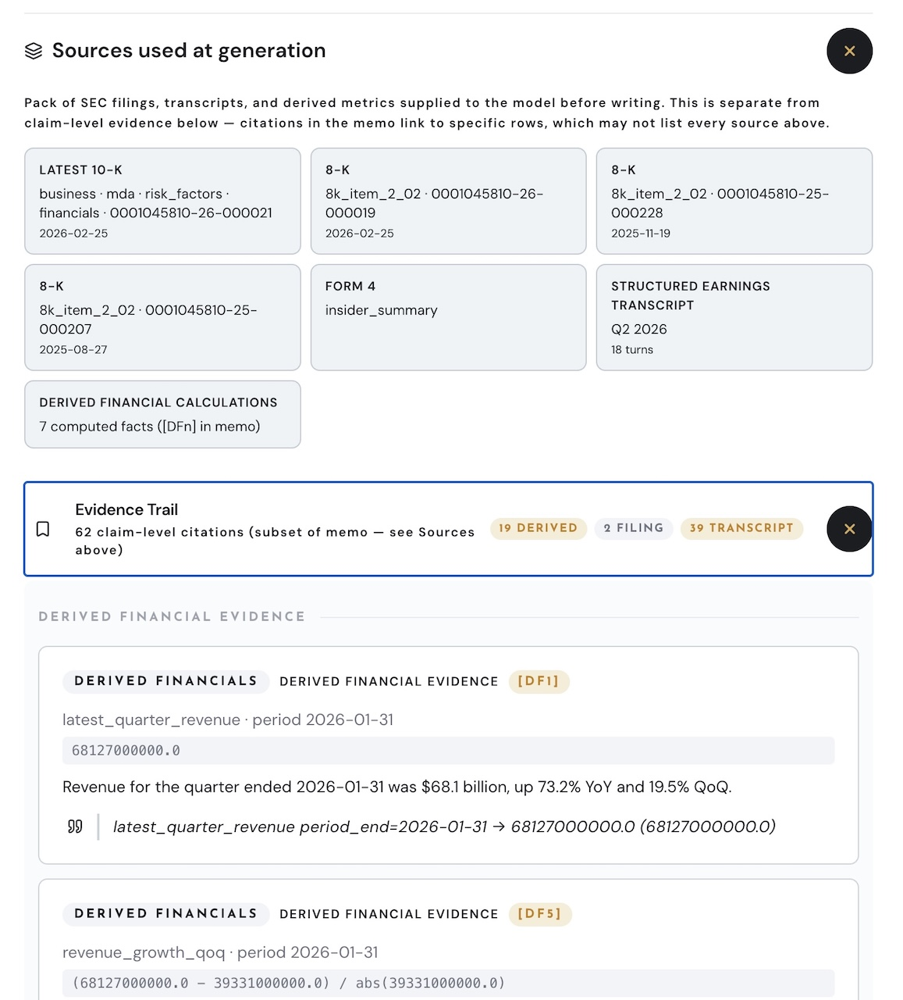

By the end of today, you'll have both.
02 / 21The default is what everyone gets. The techniques are what separate you.
03 / 21These models encode expertise across every domain — finance, medicine, law, engineering, design. But they activate all of it equally unless you tell them which pathways to use.
The knowledge is already in there. Your job is to activate the right part of it.
04 / 21Same model. Different activation. Completely different result.
05 / 21The context window is everything the AI can see in one conversation — your instructions, your documents, the full chat history. It determines which parts of the LLM’s knowledge activate.
Fill the window with signal, not noise. That’s what separates expert users from everyone else.
06 / 21Set these up once. Every conversation starts smarter.
07 / 21These four habits work in any AI tool — chatbots, IDEs, agents. Learn them once, use them everywhere.
You just learned what separates the top 10% of AI users from everyone else.
08 / 21Convert before you upload. A five-minute format change can 5x your usable context.
09 / 21I see an industry that converged on the same tools and the same thinking — and an opportunity for anyone willing to use new tools differently.
The AI converges to the average. Your job is to diverge.
10 / 21SEC filings in. Institutional-quality research memos with claim-level citations out. Every number traces back to a source.
The skills that built this are the skills you'll learn today.
11 / 21
Software lets you encode your edge — not just describe it.
12 / 21The IDE isn't just for apps — it's the same tool for building AI agents, running AI models, and designing websites. One skill, many outputs.
Think of the LLM as your whiteboard and the IDE as your workshop.
13 / 21Every prompt is copy-paste ready on the website I'll share at the end. You don't memorize these — you use them like templates.
One system. Five prompts. Every one copy-paste ready.
14 / 21Clarity here compounds into speed everywhere else. This document becomes the source of truth for every prompt that follows.
You don't start by coding. You start by thinking — and the AI helps you think.
15 / 21Next — here's how all those accounts connect into one system.
16 / 21Every account is free. The prompt walks you through every click.
17 / 21The AI reads this file before every session. It knows your app, your stack, what's built, what's broken, and what to build next. It tracks your progress, catches mistakes before they ship, and reminds you to save your work.
"This is how I maintain a complex codebase without being a developer. The AI operating system keeps Broadstreet coherent across hundreds of sessions."
— On building Broadstreet ProPersistent context turns a chatbot into a collaborator that never loses the thread.
18 / 21You'll get a production-ready skeleton — routing, database, auth, and AI integration — all wired together and running in minutes. It's the equivalent of skipping straight to the interesting part of the build.
The AI wrote this code. You directed it with a clear blueprint — which is why Acts 1 and 2 matter so much.
Skip straight to the interesting part of the build.
19 / 21Deploy means putting your finished app on the internet so anyone with the link can use it. Moving from the test kitchen to opening night.
Deploy and Debug are where most beginners hit a wall. Think of Debug as calling tech support — except the agent has already read your entire project.
The last prompt doesn't just ship your app. It keeps it alive.
20 / 21Better
prompts → a detailed app design → a working, deployed product.
Every tool is free. Every prompt is
copy-paste ready.
The gap between people who use AI and people who build with AI is closing fast. After today, you're on the building side.
Go build something.
21 / 21